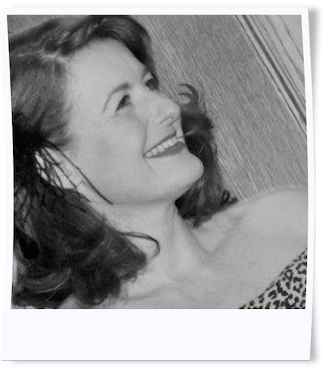

<section class="content content-layout animated fadeInUp">
	<div class="row header">
		<div class="small-12 columns">
			<div class="text-wrapper">
				<h1>Laura Hudson Mackay</h1>
			</div>
		</div>
	</div>
	<div class="row content" data-equalizer>
		<div class="small-12 medium-push-9 medium-3 columns info" data-equalizer-watch>
			
			<p><a href="../exhibitions">Click here to see Laura's exhibitions</a></p>
		</div>
		<div class="small-12 medium-pull-3 medium-9 columns" data-equalizer-watch>
			<h2>About Laura Hudson Mackay</h2>
			<div class="row profile">
				<div class="small-12 medium-5 large-4 columns profile-image">
					
				</div>
				<div class="small-12 medium-7 large-8 columns text">
					<p class="dark">Laura Hudson Mackay is a professional photographic Artist from Sheffield. Now living in Dumfries and Galloway, she divides her time between Scotland and Morocco. Laura completed an Advanced Diploma in Illustrative Photography at Glasgow Metropolitan College in 2006 and a Diploma with Distinction in Art History at London Art College in 2013. Laura is a Licentiate Member of the Royal Photographic Society and was recently appointed Representative for the Dumfries and Galloway area.</p>

					<p class="dark">Both film and digital cameras are used, exploring concepts, which are primarily still life and structure based.  Photography, fundamentally examines the relationship between light and dark and Laura chooses to shoot in black and white in order to study this juxtaposition; often adding in her own photographic textures in post-production, sometimes allowing an injection of a subtle amount of colour to a subject.  The overlaying of multiple images or adding of visual texture enables Laura to incorporate both monochrome and colour.<br/>The concepts explored include doorways into other worlds; portals, ancient buildings or natural forms, particularly stone and wood. Still life subjects include organic forms such as flowers, feathers; found objects, again employing an ever-growing library of textures to create otherworldly images, which enchant and mystify.</p>
					<p class="dark">Inspired by Celtic lore, Laura strives to create images with a complex simplicity, reflecting the Celtic esoteric spirit and culture. Also, Inspiration has come from tales of A Thousand and One Nights, with their Arabian djinns, genies and sultans and the timeless themes within these fantastical stories.  When creating her work, Laura often draws on the myths and fairy tales which link these two worlds.</p>
				</div>
			</div>
			<p class="dark quote">
				
				Thought provoking.<span>J Murray </span>
			</p>

			<p class="dark quote">
				
				Reassuringly proper photography.<span>P Murnaghan  </span>
			</p>

			<p class="dark quote">
				
				The hush of a shadow … the laughter of full light … that cool, quiet rustle in the forest ... a secret hiding place of precious, concrete memories ... a patient flower, seeking warmth on a sunny window-sill … Laura Hudson Mackay's fine art photography captures a mood, a mystique, at once stark & poetic, then lilting & romantic. Her images speak of a cognizance and strong connection with the animate & inanimate world … of harmony, synchronicity & the interplay of form, function and feeling. 
<br/><br/>
				Her work has a cosiness and intimacy too, which acts like a heartbeat, an inner voice, calling us to share in her dreamy, visual vignettes. For me, it is audible. I hear her beautiful stories. They are modern and ancient, brooding & playful.</br></br>
				Laura brings life to stilllife, & stillness to a fast and heady world. She knows her subjects well, spending time with them, studying, listening & assessing their intrinsic beauty ... just as a good and committed friend would do. 
</br></br>
				Her enchanting photography and this website are where astute craft & deep character converge.<span> Rani Cee  </span>
			</p>

			<p class="dark quote">
				
				Amazing photography, extremely eye catching<span>J Kemp 
</span>
			</p>

			<p class="dark quote">
				
				Peaceful and meditative<span>C Lacey </span>
			</p>

			<p class="dark quote">
				
				Laura Hudson Mackay's photography captures the essence of the lands through which she journeys in the rarest and most wonderful of ways. Through her lens she reaches the raw magical underbelly, which so often escapes travellers<span>Tahir Shah, Author and Filmmaker </span>
			</p>

			<p class="dark quote">
				
				Fantastic and evocative photographs that blew me away!<span>P Brebner </span>
			</p>

			<p class="dark quote">
				
				Pure Art, beautiful<span>J Colston 
</span>
			</p>
		</div>
	</div>
</section>
{% include footer.html %}